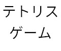
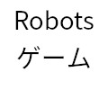
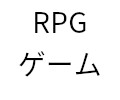

Hiroki Shinoda
 About
AboutAbout
Shinoda Hirokiと申します． データサイエンティストを目指して修行中． 小学生時代にやったポケットモンスターに感動して ゲームクリエーターを目指し始め，様々な経験をして 現在ではデータサイエンティスト目指して勉強中です． よろしくお願い致します．
 Skills
Skills
プログラミング言語
使用経験のあるプログラミング言語とその経験値
| 言語 | 使用年数 | 使用用途 |
| C言語 | 5年 | 学校課題 |
| Python | 5年 | 研究, Kaggle |
| Pytorch | 2年 | 研究, Kaggle |
| Keras Tensorflow background |
2年 | 研究 |
| Java | 2年 | ゲーム制作 |
| Android (Java) | 1年 | アプリ開発 |
| Ruby | 1年 | API制作 |
| Ruby on rails | 1年 | API制作 |
| sqlite | 数回 | API制作, サイト開発 |
資格
取得した資格
- 基本情報技術者
- TOEIC 610 (2018)
ツール
使用経験のあるツール等
- Arch Linux
- Vim
- VScode
- Jupyter lab / notebook
- docker
- git
- slack
- discord
 Works
Works

会議室管理アプリ
(デモ版)
手書き文字認識サイト
(Python)
図書館蔵書管理アプリ
(デモ版)
迷路ゲームアプリ
(Android)

テトリス風ゲーム
(C++)

Robots風ゲーム
(Java)

RPG風ゲーム
(Java)
マインスイーパー風ゲーム
(Java)
Achievements
-
2015年4月
木更津工業高等専門学校 情報工学科 入学
-
2019年8月
-
2020年3月
-
2020年3月
-
2020年3月
木更津工業高等専門学校 情報工学科 卒業
-
2020年4月
豊橋技術科学大学 情報・知能工学課程 入学
-
2022年3月
-
2022年3月
豊橋技術科学大学 情報・知能工学課程 卒業
-
2022年4月
豊橋技術科学大学 情報・知能工学専攻 入学